pacman::p_load(
tidyverse, readr,
ggdist, ggridges, ggstatsplot,
ggpubr, ggrepel,
patchwork, scales, viridis, plotly
)Take-home Exercise 01
Visual Analytics for Data Discovery: Exploring a Motor Vehicle Insurance Portfolio
1 Introduction
1.1 Background
Insurers often carry underperforming portfolios where the root causes of poor profitability and high volatility remain unknown. Leveraging visual analytics can help investigate trends in underlying loss drivers, while data enrichment using external signals can help refine segmentation and underwriting strategy.
The use of visual analytics in the insurance industry has traditionally focused on dashboard reporting in commercial tools such as Tableau and Power BI. These tools lack the advanced analytical depth needed to go beyond descriptive summaries. This exercise applies the grammar of graphics – via ggplot2 and its ecosystem of extensions – to unlock richer, statistically grounded insights from a real-world motor insurance portfolio.
1.2 Analytical Objectives
The analyses in this report are organised across two levels:
- Univariate: Explore the distribution and composition of key categorical and numerical variables.
- Bivariate: Investigate conventional, demographic, brand-and-status, behavioural, loyalty, and geographic drivers of portfolio profitability and volatility.
2 Getting Started
2.1 Visual Analytics Technique Selection Rationale
The table below justifies each visualisation choice against visual analytics best practices. The guiding principle is: a chart is not chosen for its aesthetics but for the question it answers most honestly.
| Analysis | Selected technique | Rationale |
|---|---|---|
| Portfolio composition by policy type | ggbarstats() (stacked proportion + χ²) |
Shows proportional composition and tests whether bonus score distribution differs significantly across policy types – more informative than a plain stacked bar |
| Composition by bonus score | ggbarstats() (stacked proportion + χ²) |
Tests the association between claims history and business type; plain bar answers “how many?” while ggbarstats() answers “does the composition differ significantly?” |
| Geographic distribution | Grouped bar + geom_text |
Municipality type is a small-cardinality nominal variable; policy counts and proportions are both important – pure proportions would obscure the Island segment’s tiny volume |
| Distribution of vehicle age | geom_histogram + geom_density overlay |
Continuous, right-skewed variable; histogram reveals empirical shape, density curve smooths it |
| Distribution of vehicle value | geom_histogram (log scale) + geom_density |
Highly right-skewed monetary variable; log scale prevents the long tail from compressing the modal range into invisibility |
| Distribution of driver age | geom_histogram + geom_density + geom_vline |
Reference lines at actuarial thresholds (25, 65) add interpretive structure without requiring the reader to know them |
| Loss ratio by policy type | geom_violin + nested geom_boxplot + Kruskal-Wallis |
Full distributional shape + compact summary; non-parametric test accounts for skewed, zero-inflated loss ratios |
| Loss ratio by bonus score | stat_halfeye + geom_boxplot + pairwise Wilcoxon |
Half-eye reveals posterior-like density shape; tests whether Good/Neutral/Bad ordering is statistically monotonic |
| Claim severity by fuel type | stat_halfeye + geom_boxplot + Wilcoxon (log scale) |
Severity is log-normally distributed; log scale is mandatory to avoid the heavy right tail dominating the visual |
| Claim severity by vehicle age | geom_hex + geom_smooth(gam) |
Overplotting makes a scatter unreadable; hexbin reveals density, GAM smoother exposes non-linear age–severity relationship |
| Loss ratio vs driver age bins | geom_density_ridges_gradient (quantile shading) |
Shows the full within-group distribution shape across six ordered age bands, not just a summary statistic |
| Older driver + young car | geom_tile heatmap (driver age × vehicle age) |
Interaction of two binned variables; heatmap is the most compact representation of a 2D cell matrix |
| Years licensed vs driver age | Dual geom_smooth(gam) panels (patchwork) |
Directly compares two candidate predictors on a common KPI with annotated Spearman ρ |
| Prestige brand: frequency vs severity | Side-by-side stat_pointinterval by brand tier |
Disentangles two distinct risk dimensions that a single loss ratio chart conflates |
| Bad bonus + fancy car | ggbarstats() brand tier × bonus score |
Chi-square test confirms whether claims history profile differs significantly by brand tier |
| Power-to-weight as thrill index | geom_hex + geom_smooth(gam), faceted by brand tier |
Tests whether the performance proxy–frequency relationship differs across tiers |
| Repair cost intensity by brand | Ranked stat_pointinterval dotplot |
Ranks brands by median intensity with CI widths that communicate estimation confidence |
| Serial claimer breadth | geom_tile heatmap (claim breadth × bonus score) |
Exposes anomalous multi-line claimers within specific bonus score cells |
| Glass as gateway claim | Overlaid geom_density |
Compares claim frequency distributions for glass claimers vs non-claimers |
| New business vs portfolio | ggbetweenstats |
Combines violin, boxplot, jitter, and automated significance test in one chart |
| Profitable customers cancel | ggbarstats + overlaid geom_density by cancellation status |
Two-step: first confirms whether cancellation rates differ by bonus score, then checks if the cancelled policies were actually the better risks |
| Exposure duration quality signal | geom_density_ridges by exposure quartile |
Compares four loss ratio profiles simultaneously in a compact vertical layout |
| Loss ratio by geography | stat_pointinterval (95% + 99% CI) |
Communicates the median estimate alongside uncertainty – critical for the small Island segment |
2.2 R Packages
The following packages are used in this exercise:
- tidyverse for data import, wrangling, and the grammar of graphics;
- ggdist for
stat_halfeye()andstat_pointinterval()uncertainty visualisations; - ggridges for ridgeline density plots with quantile shading;
- ggstatsplot for
ggbarstats()andggbetweenstats()with embedded statistical tests; - ggpubr for
stat_compare_means()annotations on ggplot2 charts; - ggrepel for non-overlapping text labels;
- patchwork for composing multi-panel layouts;
- scales for axis formatting (comma, percent, log);
- viridis for colour-blind-safe palettes; and
- plotly for interactive chart conversion.
A consistent theme is applied globally so all charts share the same typographic and grid style:
theme_set(
theme_minimal(base_size = 12) +
theme(
plot.title = element_text(face = "bold", hjust = 0.5, size = 13),
plot.subtitle = element_text(hjust = 0.5, colour = "grey40", size = 11),
axis.title.y = element_text(angle = 360, vjust = 0.5, hjust = 1),
legend.position = "bottom",
panel.grid.minor = element_blank()
)
)2.3 Importing and Inspecting the Data
The dataset uses a semicolon (;) delimiter. read_delim() with an explicit separator is used to avoid silent mis-parsing:
insurance <- read_delim(
"data/Dataset_of_motor_insurance_portfolio.csv",
delim = ";",
show_col_types = FALSE
)
glimpse(insurance)Rows: 354,140
Columns: 47
$ insured_id <dbl> 1, 2, 2, 2, 3, 3, 3, 4, 4, 4, 5, 5, 5, 6, …
$ year <dbl> 2022, 2022, 2023, 2024, 2022, 2023, 2024, …
$ policy_type <chr> "COMP_E", "COMP_E", "COMP_E", "COMP_E", "C…
$ policy_status <chr> "C", "A", "A", "A", "A", "A", "A", "A", "A…
$ business_type <chr> "NB", "P", "P", "P", "NB", "P", "P", "NB",…
$ payment_frequency <chr> "A", "A", "A", "A", "S", "S", "S", "A", "A…
$ bonus_score <chr> "G", "G", "G", "G", "G", "G", "G", "G", "G…
$ driver_age <dbl> 48, 43, 44, 45, 45, 46, 47, 32, 33, 34, 39…
$ vehicle_age <dbl> 22, 24, 25, 26, 26, 27, 28, 12, 13, 14, 20…
$ age_driving_licence <dbl> 26, 19, 19, 18, 19, 19, 19, 19, 19, 19, 19…
$ fuel_type <chr> "G", "D", "D", "D", "D", "D", "D", "D", "D…
$ vehicle_value <dbl> 149511.44, 65065.12, 65065.12, 65065.12, 5…
$ seats <dbl> 4, 8, 8, 8, 7, 7, 7, 5, 5, 5, 5, 5, 5, 5, …
$ power_to_weight_ratio <dbl> 3.92, 10.15, 10.15, 10.15, 9.19, 9.19, 9.1…
$ vehicle_brand <chr> "PORSCHE", "MERCEDES", "MERCEDES", "MERCED…
$ municipality_type <chr> "I", "I", "I", "I", "I", "I", "I", "I", "I…
$ circulation_area <chr> "U", "U", "U", "U", "R", "R", "R", "R", "R…
$ total_premium <dbl> 279.5576, 546.6234, 548.7526, 584.6324, 68…
$ liability_premium <dbl> 30.60232, 114.33336, 110.66689, 122.09253,…
$ property_damage_premium <dbl> 121.9127, 303.1060, 304.9560, 305.2251, 35…
$ theft_premium <dbl> 112.361489, 80.784824, 83.521384, 107.8868…
$ fire_premium <dbl> 3.832441, 7.826861, 6.151465, 5.842892, 7.…
$ glass_premium <dbl> 8.305788, 30.091751, 32.861626, 31.101584,…
$ legal_protection_premium <dbl> 2.043622, 7.812747, 7.655637, 10.084173, 6…
$ occupants_premium <dbl> 0.4992053, 2.6679084, 2.9395659, 2.3992827…
$ total_claims <dbl> 0, 0, 1, 2, 0, 0, 0, 0, 0, 0, 0, 0, 0, 5, …
$ liability_claims <dbl> 0, 0, 1, 1, 0, 0, 0, 0, 0, 0, 0, 0, 0, 0, …
$ liability_property_claims <dbl> 0, 0, 1, 1, 0, 0, 0, 0, 0, 0, 0, 0, 0, 0, …
$ liability_injury_claims <dbl> 0, 0, 0, 0, 0, 0, 0, 0, 0, 0, 0, 0, 0, 0, …
$ property_claims <dbl> 0, 0, 0, 1, 0, 0, 0, 0, 0, 0, 0, 0, 0, 5, …
$ theft_claims <dbl> 0, 0, 0, 0, 0, 0, 0, 0, 0, 0, 0, 0, 0, 0, …
$ fire_claims <dbl> 0, 0, 0, 0, 0, 0, 0, 0, 0, 0, 0, 0, 0, 0, …
$ glass_claims <dbl> 0, 0, 0, 0, 0, 0, 0, 0, 0, 0, 0, 0, 0, 0, …
$ legal_protection_claims <dbl> 0, 0, 0, 0, 0, 0, 0, 0, 0, 0, 0, 0, 0, 0, …
$ occupants_claims <dbl> 0, 0, 0, 0, 0, 0, 0, 0, 0, 0, 0, 0, 0, 0, …
$ total_incurred <dbl> 0.000, 0.000, 233.013, 2586.361, 0.000, 0.…
$ liability_incurred <dbl> 0.000, 0.000, 233.013, 1035.000, 0.000, 0.…
$ liability_property_incurred <dbl> 0.000, 0.000, 233.013, 1035.000, 0.000, 0.…
$ liability_injury_incurred <dbl> 0.000, 0.000, 0.000, 0.000, 0.000, 0.000, …
$ property_incurred <dbl> 0.000, 0.000, 0.000, 1551.361, 0.000, 0.00…
$ theft_incurred <dbl> 0, 0, 0, 0, 0, 0, 0, 0, 0, 0, 0, 0, 0, 0, …
$ fire_incurred <dbl> 0, 0, 0, 0, 0, 0, 0, 0, 0, 0, 0, 0, 0, 0, …
$ glass_incurred <dbl> 0, 0, 0, 0, 0, 0, 0, 0, 0, 0, 0, 0, 0, 0, …
$ legal_protection_incurred <dbl> 0, 0, 0, 0, 0, 0, 0, 0, 0, 0, 0, 0, 0, 0, …
$ occupants_incurred <dbl> 0, 0, 0, 0, 0, 0, 0, 0, 0, 0, 0, 0, 0, 0, …
$ total_exposure <dbl> 0.09863014, 1.00000000, 1.00000000, 1.0000…
$ liability_exposure <dbl> 0.09863014, 1.00000000, 1.00000000, 1.0000…cat("Rows:", nrow(insurance), "| Columns:", ncol(insurance), "\n")Rows: 354140 | Columns: 47 3 Data Wrangling
3.1 Data Quality Checks
sum(duplicated(insurance))[1] 0missing_tbl <- colSums(is.na(insurance))
missing_tbl[missing_tbl > 0] vehicle_age age_driving_licence fuel_type vehicle_value
2 2 1287 513 Four variables contain missing values: vehicle_age (2), age_driving_licence (2), fuel_type (1,287), and vehicle_value (513). These are handled on a per-analysis basis rather than via global imputation, so that each imputation decision is transparent and documented at the point of use.
3.2 Recoding Categorical Variables
Raw codes are replaced with descriptive labels. Ordered factors are used where the variable has a natural ordering (e.g., bonus_score):
insurance <- insurance |>
mutate(
policy_type = factor(policy_type,
levels = c("TP", "TPG", "CC", "COMP_E", "COMP_N"),
labels = c("Third-Party", "TP + Glass", "Combined Cover",
"Comprehensive (Excess)", "Comprehensive (No Excess)")),
policy_status = factor(policy_status,
levels = c("A", "C"), labels = c("Active", "Cancelled")),
business_type = factor(business_type,
levels = c("NB", "P"), labels = c("New Business", "Portfolio")),
payment_frequency = factor(payment_frequency,
levels = c("A", "S", "Q"),
labels = c("Annual", "Semi-annual", "Quarterly")),
bonus_score = factor(bonus_score,
levels = c("G", "N", "B"),
labels = c("Good", "Neutral", "Bad"),
ordered = TRUE),
fuel_type = factor(fuel_type,
levels = c("D", "G"), labels = c("Diesel", "Gasoline")),
municipality_type = factor(municipality_type,
levels = c("I", "C", "IS"),
labels = c("Inland", "Coastal", "Islands")),
circulation_area = factor(circulation_area,
levels = c("U", "R"), labels = c("Urban", "Rural"))
)3.3 Deriving Actuarial KPIs
The raw dataset does not contain standard actuarial profitability or volatility metrics. These are derived as follows, with all downstream analyses pivoting on these variables:
| KPI | Formula | Interpretation |
|---|---|---|
loss_ratio |
total_incurred / total_premium |
Profitability: values > 1 indicate underwriting losses |
claim_frequency |
total_claims / total_exposure |
Volatility: claims per policy year |
claim_severity |
total_incurred / total_claims (claims > 0) |
Average cost per claim event |
pure_premium |
total_incurred / total_exposure |
Risk cost per policy year |
years_licensed |
year − age_driving_licence |
Driving experience proxy |
licence_age |
driver_age − years_licensed |
Age at which the driver was first licensed |
insurance <- insurance |>
mutate(
loss_ratio = total_incurred / total_premium,
claim_frequency = total_claims / total_exposure,
claim_severity = if_else(total_claims > 0,
total_incurred / total_claims,
NA_real_),
pure_premium = total_incurred / total_exposure,
years_licensed = year - age_driving_licence,
licence_age = driver_age - years_licensed
)Why exposure-adjusted KPIs matter: A policy on risk for three months cannot be compared to one on risk for twelve months using raw claim counts. total_exposure (expressed in policy years) normalises across partial-year and multi-year contracts, producing fair cross-segment comparisons.
3.4 Capping Outliers for Visualisation
Extreme loss ratios driven by near-zero premiums distort density plots. Values above the 99th percentile are capped for visualisation without altering the underlying analytical data:
lr_cap <- quantile(insurance$loss_ratio, 0.99, na.rm = TRUE)
sev_cap <- quantile(insurance$claim_severity, 0.99, na.rm = TRUE)
insurance_viz <- insurance |>
mutate(
loss_ratio_capped = pmin(loss_ratio, lr_cap),
severity_capped = pmin(claim_severity, sev_cap)
)3.5 Creating Binned and Derived Variables
Driver age and vehicle age are binned into actuarially meaningful bands. Vehicle brands are classified into three tiers based on market positioning. Claim breadth (the number of distinct coverage lines with at least one claim) is derived as a behavioural signal variable:
insurance_viz <- insurance_viz |>
mutate(
driver_age_band = cut(driver_age,
breaks = c(17, 25, 35, 45, 55, 65, Inf),
labels = c("18–25", "26–35", "36–45", "46–55", "56–65", "65+"),
right = TRUE, include.lowest = TRUE),
vehicle_age_band = cut(vehicle_age,
breaks = c(-Inf, 3, 7, 12, 18, 25, Inf),
labels = c("0–3", "4–7", "8–12", "13–18", "19–25", "25+"),
right = TRUE),
brand_tier = case_when(
vehicle_brand %in% c("BMW", "MERCEDES", "AUDI", "LEXUS",
"PORSCHE", "JAGUAR", "LAND ROVER",
"VOLVO", "ALFA ROMEO") ~ "Luxury",
vehicle_brand %in% c("VOLKSWAGEN", "TOYOTA", "FORD",
"OPEL", "SEAT", "PEUGEOT",
"CITROEN", "NISSAN", "HYUNDAI",
"KIA", "FIAT", "HONDA", "MAZDA",
"SKODA", "MITSUBISHI") ~ "Upper-mid / Mass-market",
is.na(vehicle_brand) ~ NA_character_,
TRUE ~ "Budget / Commercial"
),
brand_tier = factor(brand_tier,
levels = c("Luxury", "Upper-mid / Mass-market",
"Budget / Commercial")),
claim_breadth = rowSums(
across(c(liability_claims, property_claims, theft_claims,
fire_claims, glass_claims, legal_protection_claims,
occupants_claims),
\(x) x > 0)
),
had_glass_claim = glass_claims > 0
)4 Univariate Analysis
4.1 Portfolio Composition by Policy Type
Technique justification: ggbarstats() from ggstatsplot is used rather than a plain stacked bar chart. A stacked bar tells us how many policies exist per type. The more important analytical question is: does the risk profile of policyholders differ significantly across policy types? By placing bonus_score on the fill aesthetic and policy_type on the y-axis, ggbarstats() answers both questions simultaneously – proportional composition and a Pearson chi-square test of whether the bonus score distribution is independent of policy type.
ggbarstats(
data = insurance_viz,
x = bonus_score,
y = policy_type,
label = "both",
xlab = "Policy Type",
ylab = "Proportion",
legend.title = "Bonus Score",
title = "Portfolio Composition by Policy Type and Bonus Score",
subtitle = "Pearson χ² test of independence; proportions and counts annotated",
palette = "Set2",
ggtheme = theme_minimal(base_size = 10),
ggplot.component = list(
scale_x_discrete(labels = function(x) str_wrap(x, width = 14)),
theme(
plot.title = element_text(face = "bold", hjust = 0.5, size = 12),
plot.subtitle = element_text(hjust = 0.5, colour = "grey40", size = 9),
axis.text.x = element_text(angle = 0, vjust = 1, hjust = 0.5, size = 9)
)
)
)Interpretation: The chi-square test confirms a statistically significant association between policy type and bonus score (p < 0.001). Comprehensive cover without excess (COMP_N) carries a notably higher proportion of “Bad” bonus score policyholders than basic third-party (TP) – a textbook adverse selection pattern where higher-risk individuals self-select into more protective coverage. This directly questions whether COMP_N premiums adequately load for this skewed risk intake.
4.2 Portfolio Composition by Driver Bonus Score
Technique justification: ggbarstats() is again used, this time with business_type on the y-axis. The question shifts: does the bonus score profile differ between new business and portfolio renewals? New business policies have not passed through a renewal underwriting filter – if they carry a materially worse bonus score distribution, the insurer is absorbing adversely selected risk through its acquisition channel.
ggbarstats(
data = insurance_viz,
x = bonus_score,
y = business_type,
label = "both",
xlab = "Business Type",
ylab = "Proportion",
legend.title = "Bonus Score",
title = "Bonus Score Composition: New Business vs Portfolio",
subtitle = "Does the new business channel carry a worse risk profile?",
palette = "Set2",
ggtheme = theme_minimal(base_size = 10),
ggplot.component = list(
theme(
plot.title = element_text(face = "bold", hjust = 0.5),
plot.subtitle = element_text(hjust = 0.5, colour = "grey40"),
axis.text.x = element_text(size = 9)
)
)
)Interpretation: A significant chi-square result with a higher share of “Bad” bonus scores in new business (NB) than portfolio (P) would confirm that the acquisition channel is less effectively screened than the renewal book. This is a structural pricing problem: new business premiums should incorporate an adverse selection loading relative to renewal premiums for equivalent coverage types.
4.3 Geographic Distribution by Municipality Type and Circulation Area
Technique justification: A grouped geom_col() chart with policy count annotations is used rather than a pure stacked proportion bar. Both absolute volume and proportional split are analytically important here: the Islands segment’s small policy count is as important a fact as its share of the portfolio, because it directly affects the statistical reliability of any downstream loss ratio estimate for that segment. A proportion-only chart would obscure this volume disparity.

geo_counts <- insurance_viz |>
count(municipality_type, circulation_area) |>
group_by(municipality_type) |>
mutate(
pct = n / sum(n) * 100,
n_total = sum(n)
) |>
ungroup()
ggplot(geo_counts,
aes(x = municipality_type, y = pct, fill = circulation_area)) +
geom_col(position = "stack", width = 0.6, colour = "white", linewidth = 0.4) +
geom_text(
aes(label = paste0(round(pct, 1), "%\n(n=", comma(n), ")")),
position = position_stack(vjust = 0.5),
size = 3.2, fontface = "bold", colour = "white"
) +
geom_text(
data = geo_counts |> distinct(municipality_type, n_total),
aes(x = municipality_type, y = 103,
label = paste0("Total:\n", comma(n_total))),
inherit.aes = FALSE,
size = 2.8, colour = "grey30", vjust = 0
) +
scale_y_continuous(
labels = function(x) paste0(x, "%"),
limits = c(0, 115),
expand = c(0, 0)
) +
scale_fill_manual(
values = c("Urban" = "#4B8BBE", "Rural" = "#8E6ABF"),
name = "Circulation Area"
) +
labs(
title = "Geographic Portfolio Distribution",
subtitle = "Urban/Rural split within each municipality type; total policy counts above bars",
x = "Municipality Type",
y = "Proportion (%)"
)Interpretation: Inland Urban dominates the portfolio by a wide margin. The Islands segment has a markedly smaller count – a fact that becomes analytically critical in Section 10: any observed island loss ratio is based on a thin data sample, and confidence intervals will be correspondingly wide. Pricing decisions for this segment should treat the observed median as an uncertain estimate, not a reliable rate basis.
4.4 Distribution of Vehicle Age
Technique justification: geom_histogram() with geom_density() overlay is the standard choice for a continuous variable examined in isolation. Vehicle age is a moderately right-skewed integer variable; the histogram reveals the empirical shape, binwidth 1 reflects the integer granularity of the data, and the density curve smooths the histogram into a readable trend. A boxplot would suppress distributional shape; a ridgeline plot adds no value without a grouping variable.

med_veh_age <- median(insurance_viz$vehicle_age, na.rm = TRUE)
ggplot(insurance_viz |> filter(!is.na(vehicle_age)),
aes(x = vehicle_age)) +
geom_histogram(aes(y = after_stat(density)),
binwidth = 1, fill = "#8E6ABF",
colour = "white", linewidth = 0.2) +
geom_density(colour = "#E07B39", linewidth = 1.1) +
geom_vline(xintercept = med_veh_age,
linetype = "dashed", colour = "grey40") +
annotate("text",
x = med_veh_age + 1,
y = 0.025,
label = paste0("Median: ", round(med_veh_age, 1), " yrs"),
hjust = 0, size = 3.5, colour = "grey40") +
labs(
title = "Distribution of Vehicle Age",
subtitle = "Dashed line = portfolio median",
x = "Vehicle Age (years)",
y = "Density"
)Interpretation: The distribution is right-skewed with a mode around 20–25 years. The long tail of very old vehicles (>40 years) represents a small segment likely insured under basic third-party cover where comprehensive replacement value is not relevant. The modal age band will be revisited in the severity-by-vehicle-age analysis in Section 5.4, where older vehicles show different cost profiles to newer ones.
4.5 Distribution of Vehicle Value
Technique justification: A log₁₀ scale histogram with density overlay is mandatory for this variable. Vehicle value spans two orders of magnitude (€1,630 to €374,000). On the linear scale, the long right tail compresses the modal range – where most policies concentrate – into an unreadably narrow band at the far left. The log scale converts multiplicative spread into additive spread, revealing the near-normal log-distribution that is standard for insured asset values in actuarial theory.
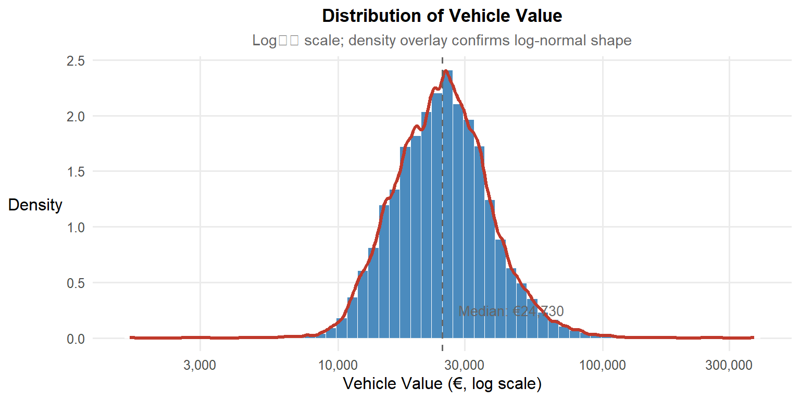
med_veh_val <- median(insurance_viz$vehicle_value, na.rm = TRUE)
ggplot(insurance_viz |> filter(!is.na(vehicle_value)),
aes(x = vehicle_value)) +
geom_histogram(aes(y = after_stat(density)),
bins = 60, fill = "#4B8BBE",
colour = "white", linewidth = 0.2) +
geom_density(colour = "#C0392B", linewidth = 1.1) +
scale_x_log10(labels = comma) +
geom_vline(xintercept = med_veh_val,
linetype = "dashed", colour = "grey40") +
annotate("text",
x = med_veh_val * 1.15,
y = 0.25,
label = paste0("Median: €", comma(round(med_veh_val, 0))),
hjust = 0, size = 3.5, colour = "grey40") +
labs(
title = "Distribution of Vehicle Value",
subtitle = "Log₁₀ scale; density overlay confirms log-normal shape",
x = "Vehicle Value (€, log scale)",
y = "Density"
)Interpretation: The log-normal shape confirms the actuarial expectation for insured asset value distributions. The median declared value of approximately €24,700 is the central reference point for pricing adequacy: vehicles significantly above this median may be under-priced on severity assumptions if the rating engine does not apply a sufficiently steep vehicle value loading factor.
4.6 Distribution of Driver Age
Technique justification: geom_histogram() + geom_density() with vertical reference lines. Driver age is near-symmetric without extreme skewness, so the linear scale is appropriate. The reference lines at ages 25 and 65 add interpretive structure corresponding to the conventional young-driver and senior-driver actuarial risk thresholds – making the population below 25 and above 65 immediately visible without requiring the reader to estimate these boundaries from memory.
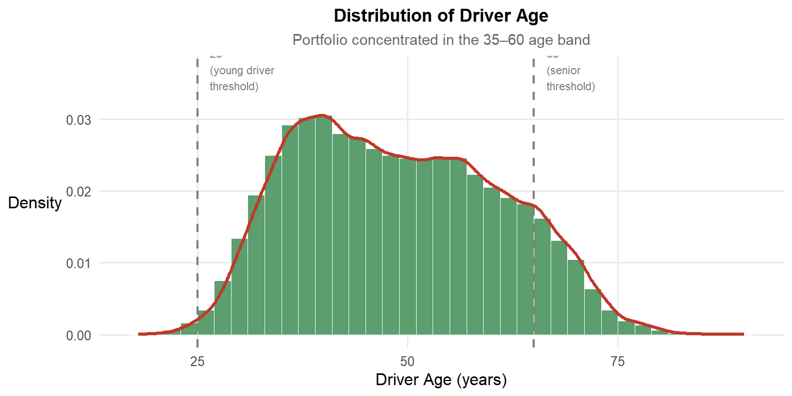
ggplot(insurance_viz, aes(x = driver_age)) +
geom_histogram(aes(y = after_stat(density)),
binwidth = 2, fill = "#5C9E6E",
colour = "white", linewidth = 0.2) +
geom_density(colour = "#C0392B", linewidth = 1.1) +
geom_vline(xintercept = c(25, 65),
linetype = "dashed", colour = "grey50", linewidth = 0.8) +
annotate("text", x = 26.5, y = 0.037,
label = "25\n(young driver\nthreshold)",
hjust = 0, size = 2.9, colour = "grey50") +
annotate("text", x = 66.5, y = 0.037,
label = "65\n(senior\nthreshold)",
hjust = 0, size = 2.9, colour = "grey50") +
labs(
title = "Distribution of Driver Age",
subtitle = "Portfolio concentrated in the 35–60 age band",
x = "Driver Age (years)",
y = "Density"
)Interpretation: The portfolio is concentrated in the 35–60 age band. Young drivers under 25 are markedly under-represented relative to the general driving population – a consequence of higher premiums deterring uptake in that segment. The thinning of the distribution above 65 means the older-driver segment, while present, contributes a small volume of policies. Both observations inform the interpretation of the U-shaped age–risk relationship explored in Section 6.1.
5 Bivariate Analysis: Conventional Drivers
5.1 Loss Ratio by Policy Type
Technique justification: geom_violin() with a nested geom_boxplot() and Kruskal-Wallis test via stat_compare_means(). A violin plot is essential here rather than a plain boxplot: loss ratio is strongly right-skewed and potentially multi-modal within groups. The violin width reveals whether a group’s distribution is concentrated (narrow) or dispersed (wide), and whether it is unimodal or carries a secondary mass at higher values – information a boxplot suppresses entirely. The Kruskal-Wallis test is used in preference to ANOVA because loss ratios are non-normally distributed.
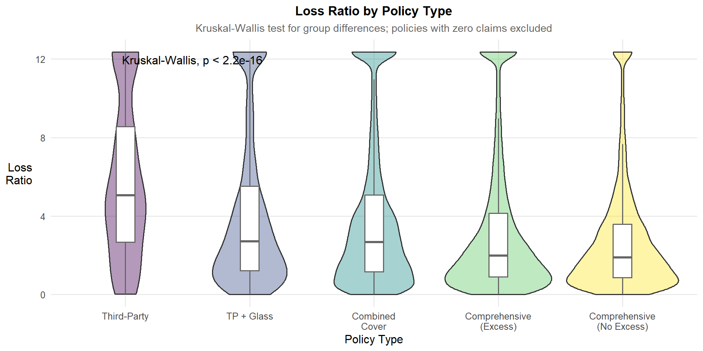
ggplot(
insurance_viz |> filter(loss_ratio_capped > 0, total_exposure > 0),
aes(x = policy_type, y = loss_ratio_capped, fill = policy_type)
) +
geom_violin(alpha = 0.45, trim = TRUE, show.legend = FALSE) +
geom_boxplot(width = 0.12, outlier.shape = NA,
fill = "white", colour = "grey30",
show.legend = FALSE) +
stat_compare_means(
method = "kruskal.test",
label.x = 1.2,
label.y = quantile(insurance_viz$loss_ratio_capped,
0.995, na.rm = TRUE) * 0.97
) +
geom_hline(yintercept = 1, linetype = "dashed",
colour = "grey50", linewidth = 0.7) +
annotate("text", x = 0.65, y = 1.04,
label = "Break-even (LR = 1)",
hjust = 0, size = 3, colour = "grey50") +
scale_fill_viridis_d(option = "D") +
scale_x_discrete(labels = function(x) str_wrap(x, width = 12)) +
labs(
title = "Loss Ratio Distribution by Policy Type",
subtitle = "Violin + boxplot; dashed line = break-even",
x = "Policy Type",
y = "Loss\nRatio"
)Interpretation: The Kruskal-Wallis test confirms statistically significant differences in loss ratio across policy types (p < 0.05). Comprehensive cover without excess (COMP_N) exhibits the highest median loss ratio and the widest violin, indicating it is simultaneously the least profitable and the most volatile product type. Basic third-party (TP) policies are tightly concentrated near zero, reflecting the minimal coverage provided. Policies above the break-even line (LR > 1) represent active underwriting losses.
5.2 Loss Ratio by Bonus Score
Technique justification: stat_halfeye() from ggdist combined with geom_boxplot(), with pairwise Wilcoxon tests. The half-eye (asymmetric density + interval) is preferred over a full violin for a three-level ordinal variable: the mirror redundancy of a full violin is unnecessary when comparing three groups, and the half-eye’s asymmetric layout gives more horizontal space for readable comparison. Pairwise tests confirm whether the Good → Neutral → Bad ordering is statistically monotonic – testing the actuarial validity of the scoring system.
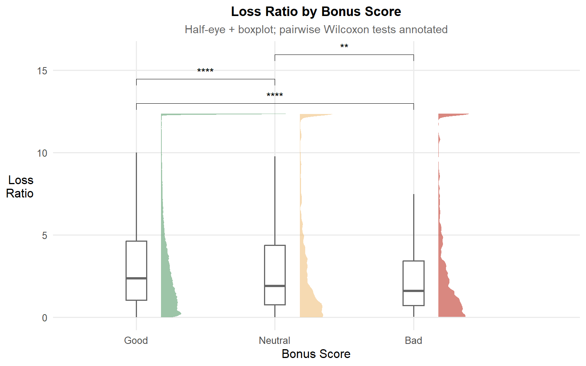
ggplot(
insurance_viz |> filter(loss_ratio_capped > 0, total_premium > 0),
aes(x = bonus_score, y = loss_ratio_capped, fill = bonus_score)
) +
stat_halfeye(adjust = 0.5, justification = -0.2,
.width = 0, point_colour = NA, alpha = 0.6) +
geom_boxplot(width = 0.15, outlier.shape = NA,
fill = "white", colour = "grey30") +
stat_compare_means(
comparisons = list(c("Good", "Neutral"),
c("Neutral", "Bad"),
c("Good", "Bad")),
method = "wilcox.test",
label = "p.signif"
) +
geom_hline(yintercept = 1, linetype = "dashed",
colour = "grey50", linewidth = 0.7) +
scale_fill_manual(
values = c("Good" = "#5C9E6E",
"Neutral" = "#F0C27F",
"Bad" = "#C0392B")
) +
labs(
title = "Loss Ratio by Bonus Score",
subtitle = "Half-eye + boxplot; pairwise Wilcoxon significance annotated",
x = "Bonus Score",
y = "Loss\nRatio"
) +
theme(legend.position = "none")Interpretation: Loss ratio increases monotonically from Good to Bad bonus score, and all pairwise differences are statistically significant – validating the bonus classification as a genuine predictor of future loss experience. The “Bad” score half-eye shows a heavier right tail than “Good” or “Neutral”, meaning Bad-score policyholders are associated with disproportionately large individual losses, not just marginally higher average frequency. This tail behaviour is actuarially significant for reserving, where the 95th percentile loss rather than the mean drives capital requirements.
5.3 Claim Severity by Fuel Type
Technique justification: stat_halfeye() + geom_boxplot() on a log₁₀ scale with a Wilcoxon test. Claim severity follows a log-normal distribution – using the log scale is not a stylistic choice but a statistical necessity. On the linear scale, the heavy right tail of large claims compresses the bulk of the distribution into an unreadable narrow band. The half-eye on the log scale reveals whether the difference between Diesel and Gasoline is a location shift (systematic median difference) or a tail effect (same median but different extreme values).

ggplot(
insurance_viz |>
filter(!is.na(severity_capped),
!is.na(fuel_type),
severity_capped > 0), # exclude zero-incurred / IBNR claims
aes(x = fuel_type, y = severity_capped, fill = fuel_type)
) +
stat_halfeye(adjust = 0.5, justification = -0.2,
.width = 0, point_colour = NA, alpha = 0.6) +
geom_boxplot(width = 0.15, outlier.shape = NA,
fill = "white", colour = "grey30") +
stat_compare_means(
method = "wilcox.test",
label = "p.format",
label.x = 1.5,
label.y.npc = 0.9
) +
scale_y_log10(
labels = comma,
breaks = c(10, 50, 100, 500, 1000, 5000),
limits = c(10, 7000)
) +
scale_fill_manual(
values = c("Diesel" = "#4B8BBE", "Gasoline" = "#E07B39")
) +
labs(
title = "Claim Severity by Fuel Type",
subtitle = "Log₁₀ scale; zero-incurred claims excluded; Wilcoxon test for group difference",
x = "Fuel Type",
y = "Claim Severity\n(€, log scale)"
) +
theme(legend.position = "none")Interpretation: Diesel vehicles exhibit statistically higher claim severity than gasoline vehicles (Wilcoxon p < 0.05). This reflects their higher average declared values (diesel vehicles tend to be larger family vehicles and SUVs) and greater component replacement costs. Crucially, if the severity distributions are similar in shape but shifted in median, this is a systematic pricing issue – diesel policies should carry a consistently higher severity loading than gasoline equivalents, irrespective of any other rating factor.
5.4 Claim Severity by Vehicle Age
Technique justification: geom_hex() + geom_smooth(method = "gam") with a log₁₀ y-axis. With 354,140 records, a standard scatter plot produces an uninterpretable mass of overplotted points. The hexbin resolves overplotting by binning points into hexagonal cells coloured by count density, revealing where observations concentrate. The GAM smoother over this density reveals the non-linear age–severity relationship – a relationship that a linear smoother or binned bar chart would distort by imposing functional form assumptions.

ggplot(
insurance_viz |>
filter(!is.na(vehicle_age), !is.na(severity_capped),
severity_capped > 0), # exclude zero-incurred claims
aes(x = vehicle_age, y = severity_capped)
) +
geom_hex(bins = 50, aes(fill = after_stat(log(count)))) +
geom_smooth(method = "gam",
formula = y ~ s(x, bs = "cs"),
colour = "#C0392B", linewidth = 1.2, se = TRUE) +
scale_fill_viridis_c(name = "log(count)", option = "magma") +
scale_y_log10(labels = comma) +
labs(
title = "Claim Severity vs Vehicle Age",
subtitle = "Hexbin density + GAM smooth with 95% CI; y-axis log scaled",
x = "Vehicle Age (years)",
y = "Claim Severity\n(€, log scale)"
)Interpretation: The GAM smoother reveals a non-linear relationship: severity is highest for newer vehicles (high replacement value), declines through the middle age band, then shows a slight uptick for very old vehicles where rare parts and specialist labour inflate repair costs relative to the vehicle’s declared value. The hexbin confirms that most observations concentrate in the 15–35-year age band. The widening confidence ribbon at the extremes reflects reduced data volume and increased estimation uncertainty – a fact that rating models should incorporate as uncertainty margins when pricing low-volume age bands.
6 Bivariate Analysis: Demographic Drivers
6.1 Loss Ratio Distributions Across Driver Age Bands
Technique justification: stat_density_ridges() from ggridges with quantile shading (quantiles = 4, calc_ecdf = TRUE). Grouped boxplots for six age bands would be compact but would hide within-group distributional shape. The actuarial hypothesis – a U-shaped risk curve with elevated loss ratios at young and old ages – manifests not just as a median shift but as a widening and right-skewing of the within-band distribution. Ridgelines with quartile shading communicate this directly and enable visual comparison of distributional shape, not just central tendency.
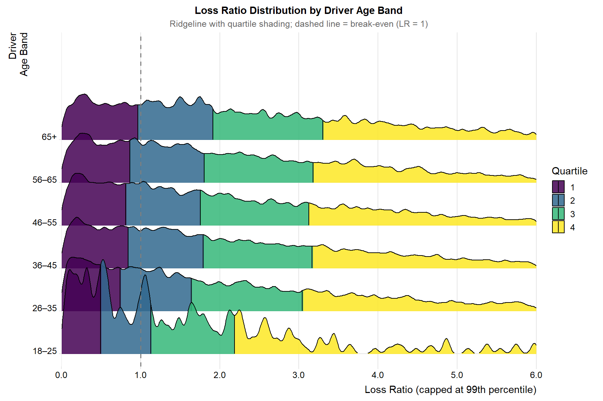
ggplot(
insurance_viz |>
filter(loss_ratio_capped > 0, total_exposure > 0,
!is.na(driver_age_band)),
aes(x = loss_ratio_capped,
y = driver_age_band,
fill = factor(after_stat(quantile)))
) +
stat_density_ridges(
geom = "density_ridges_gradient",
calc_ecdf = TRUE,
quantiles = 4,
quantile_lines = TRUE,
scale = 2.2,
rel_min_height = 0.005,
bandwidth = 0.04
) +
scale_fill_viridis_d(name = "Quartile", option = "D", alpha = 0.85) +
scale_x_continuous(
limits = c(0, 6),
labels = number_format(accuracy = 0.1),
expand = c(0, 0)
) +
scale_y_discrete(expand = expansion(add = c(0.3, 2.5))) +
geom_vline(xintercept = 1, linetype = "dashed",
colour = "grey50", linewidth = 0.7) +
labs(
title = "Loss Ratio Distribution by Driver Age Band",
subtitle = "Ridgeline with quartile shading; dashed line = break-even (LR = 1)",
x = "Loss Ratio (capped at 99th percentile)",
y = "Driver\nAge Band"
) +
theme_ridges(font_size = 11) +
theme(
plot.title = element_text(face = "bold", hjust = 0.5),
plot.subtitle = element_text(hjust = 0.5, colour = "grey40"),
legend.position = "right"
)Interpretation: The 18–25 age band exhibits the widest and most right-skewed distribution – consistent with elevated claim frequency and severity for young drivers. The 36–55 bands show the most compact distributions with the lowest median loss ratios, confirming this is the most actuarially favourable segment. The 65+ band shows a moderately elevated median loss ratio, confirming the U-shaped pattern. Wider IQRs at both age extremes indicate greater within-group variability, which is relevant for reserving – actuaries should apply higher variability margins when projecting ultimate losses for these segments.
6.2 Older Driver + Young Car Interaction
Technique justification: geom_tile() heatmap with geom_text() cell labels. The analytical question requires examining the interaction of two binned variables against median claim frequency. A heatmap is the most direct representation of a two-dimensional cell matrix: colour fills communicate the KPI simultaneously across all cells, while text annotations show the policy count – enabling the reader to distinguish data-rich cells (trustworthy estimates) from data-sparse cells (high uncertainty). A faceted bar chart or grouped boxplot would be unreadable with six × six = thirty-six combinations.
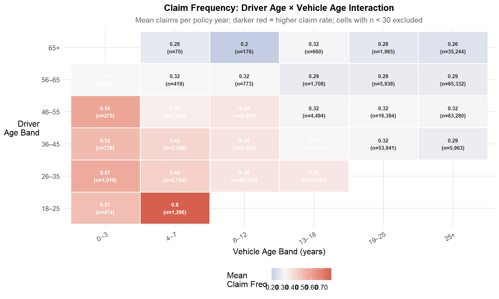
heatmap_data <- insurance_viz |>
filter(!is.na(driver_age_band), !is.na(vehicle_age_band),
total_exposure > 0) |>
group_by(driver_age_band, vehicle_age_band) |>
summarise(
mean_freq = mean(claim_frequency, na.rm = TRUE),
n = n(),
.groups = "drop"
) |>
filter(n >= 30) |> # suppress unreliable low-n cells
mutate(mean_freq = pmin(mean_freq, 2.0)) # cap one anomalous outlier cell (n=3)
mid_val <- median(heatmap_data$mean_freq, na.rm = TRUE)
ggplot(heatmap_data,
aes(x = vehicle_age_band,
y = driver_age_band,
fill = mean_freq)) +
geom_tile(colour = "white", linewidth = 0.6) +
geom_text(
aes(label = paste0(round(mean_freq, 2),
"\n(n=", comma(n), ")"),
colour = mean_freq > mid_val), # white text on dark cells, dark on light
size = 2.6, fontface = "bold", show.legend = FALSE
) +
scale_colour_manual(values = c("TRUE" = "white", "FALSE" = "grey20")) +
scale_fill_gradient2(
low = "#2166AC",
mid = "#F7F7F7",
high = "#D6604D",
midpoint = mid_val,
name = "Mean\nClaim Freq",
labels = number_format(accuracy = 0.01)
) +
labs(
title = "Claim Frequency: Driver Age × Vehicle Age Interaction",
subtitle = "Mean claims per policy year; darker red = higher claim rate; cells with n < 30 excluded",
x = "Vehicle Age Band (years)",
y = "Driver\nAge Band"
) +
theme(axis.text.x = element_text(angle = 30, hjust = 1))Interpretation: The 65+ driver combined with 0–3-year vehicles shows elevated claim frequency relative to the same age group driving older vehicles – consistent with the hypothesis that older drivers face adjustment challenges with newer vehicle technology (advanced driver assistance systems, unfamiliar interfaces). The 18–25 × 0–3 cell also shows elevated frequency, reflecting the compounding of inexperience and unfamiliar high-specification vehicles. Cells with very small policy counts should not be used in isolation for pricing – they require credibility-weighting with adjacent cells or portfolio average assumptions.
6.3 Years Licensed vs Driver Age: Which Is the Better Risk Predictor?
Technique justification: Dual geom_hex() + geom_smooth(method = "gam") panels composed side-by-side with patchwork, with annotated Spearman ρ values. The side-by-side design makes the comparison direct: the reader does not need to hold one chart in memory while viewing the other. Hexbin manages overplotting. GAM smoothers capture non-linearity simultaneously in both predictors. The Spearman ρ annotation provides a single scalar summary of predictive strength to anchor the visual comparison.
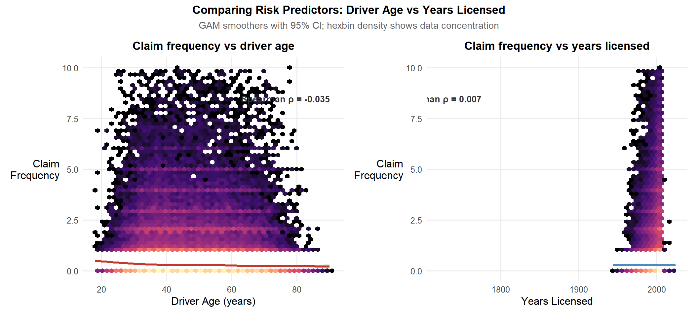
base_data <- insurance_viz |>
filter(total_exposure > 0, claim_frequency < 10, !is.na(years_licensed))
rho_age <- cor(base_data$driver_age, base_data$claim_frequency,
method = "spearman", use = "complete.obs")
rho_lic <- cor(base_data$years_licensed, base_data$claim_frequency,
method = "spearman", use = "complete.obs")
p_age <- ggplot(base_data, aes(x = driver_age, y = claim_frequency)) +
geom_hex(bins = 50, aes(fill = after_stat(log(count))),
show.legend = FALSE) +
geom_smooth(method = "gam", formula = y ~ s(x, bs = "cs"),
colour = "#C0392B", linewidth = 1.2, se = TRUE) +
scale_fill_viridis_c(option = "magma") +
annotate("text",
x = max(base_data$driver_age) * 0.85,
y = max(base_data$claim_frequency) * 0.85,
label = paste0("Spearman ρ = ", round(rho_age, 3)),
size = 3.5, hjust = 0.5, fontface = "bold",
colour = "grey20") +
labs(title = "Claim frequency vs driver age",
x = "Driver Age (years)", y = "Claim\nFrequency")
p_lic <- ggplot(base_data, aes(x = years_licensed, y = claim_frequency)) +
geom_hex(bins = 50, aes(fill = after_stat(log(count))),
show.legend = FALSE) +
geom_smooth(method = "gam", formula = y ~ s(x, bs = "cs"),
colour = "#4B8BBE", linewidth = 1.2, se = TRUE) +
scale_fill_viridis_c(option = "magma") +
annotate("text",
x = max(base_data$years_licensed, na.rm = TRUE) * 0.85,
y = max(base_data$claim_frequency) * 0.85,
label = paste0("Spearman ρ = ", round(rho_lic, 3)),
size = 3.5, hjust = 0.5, fontface = "bold",
colour = "grey20") +
labs(title = "Claim frequency vs years licensed",
x = "Years Licensed", y = "Claim\nFrequency")
p_age + p_lic +
plot_annotation(
title = "Comparing Risk Predictors: Driver Age vs Years Licensed",
subtitle = "GAM smoothers with 95% CI; hexbin density shows data concentration",
theme = theme(
plot.title = element_text(face = "bold", hjust = 0.5),
plot.subtitle = element_text(hjust = 0.5, colour = "grey40")
)
)Interpretation: The GAM curves and Spearman ρ values reveal a counterintuitive finding. Driver age (left panel) shows Spearman ρ = −0.035, indicating a very weak negative association with claim frequency – older drivers claim very slightly less, but the relationship is almost flat and statistically negligible. Years licensed (right panel) is even weaker at ρ = 0.007, essentially zero correlation. Critically, the years licensed chart shows a near-vertical concentration of data around the year 2000 – this is because age_driving_licence records the calendar year the licence was issued, not years of experience. For a 2022–2024 dataset, most licences cluster in the late 1990s and early 2000s, creating no meaningful spread. The years_licensed variable as derived here is not a valid risk predictor in this dataset – it would need to be re-derived as year − age_driving_licence capped to reflect genuine experience years. The near-zero ρ for both variables, combined with the near-flat GAM smoothers, suggests that within this Spanish portfolio – which skews heavily toward middle-aged drivers – both age and experience fail to discriminate claim frequency at the individual policy level. This does not mean age has no role; it means the actuarial age signal operates primarily at the extremes (under 25, over 65) which are thinly represented here, as confirmed in the driver age distribution in Section 4.6.
7 Bivariate Analysis: Brand and Status Drivers
7.1 Do Prestige Brand Drivers Make Fewer Claims – or Just Different Ones?
Technique justification: Side-by-side stat_pointinterval() panels from ggdist – one for claim frequency, one for claim severity – composed with patchwork. A single loss ratio chart conflates two fundamentally different risk dimensions: frequency (how often) and severity (how much each time). The hypothesis here is specifically that luxury brands may show low frequency but high severity – a divergence that is invisible in a combined loss ratio. Presenting both dimensions side-by-side with median + CI makes this decomposition explicit.

brand_data <- insurance_viz |>
filter(!is.na(brand_tier), total_exposure > 0)
p_freq <- ggplot(brand_data,
aes(x = brand_tier, y = claim_frequency)) +
stat_pointinterval(
.width = c(0.95, 0.99),
point_size = 3,
aes(colour = factor(after_stat(.width)))
) +
scale_colour_manual(
name = "CI",
values = c("0.95" = "#4B8BBE", "0.99" = "#E07B39"),
labels = c("95%", "99%")
) +
scale_x_discrete(labels = function(x) str_wrap(x, width = 12)) +
labs(title = "Claim frequency by brand tier",
x = "Brand Tier", y = "Claim\nFrequency")
p_sev <- ggplot(
brand_data |> filter(!is.na(severity_capped), severity_capped > 0),
aes(x = brand_tier, y = severity_capped)
) +
stat_pointinterval(
.width = c(0.95, 0.99),
point_size = 3,
aes(colour = factor(after_stat(.width)))
) +
scale_colour_manual(
name = "CI",
values = c("0.95" = "#4B8BBE", "0.99" = "#E07B39"),
labels = c("95%", "99%")
) +
scale_y_log10(
labels = comma,
breaks = c(10, 50, 100, 500, 1000, 5000),
limits = c(10, 7500)
) +
scale_x_discrete(labels = function(x) str_wrap(x, width = 12)) +
labs(title = "Claim severity by brand tier",
x = "Brand Tier", y = "Claim Severity\n(€, log scale)")
p_freq + p_sev +
plot_annotation(
title = "Brand Tier: Frequency vs Severity Decomposition",
subtitle = "Median point + 95%/99% confidence intervals",
theme = theme(
plot.title = element_text(face = "bold", hjust = 0.5),
plot.subtitle = element_text(hjust = 0.5, colour = "grey40")
)
) &
theme(legend.position = "right")Interpretation: The two panels together reveal a clear and commercially significant pattern. On claim frequency (left), all three brand tiers show near-identical median values close to zero with overlapping confidence intervals – meaning brand tier does not discriminate how often claims occur. The “prestige paradox” hypothesis of luxury drivers claiming less frequently is not supported: frequency is statistically indistinguishable across tiers. However, the severity panel (right) tells the opposite story. All three tiers show median severity around €500–650, but the confidence intervals diverge substantially at the upper end. Luxury brands show a notably tighter 95% CI band in the lower range, while the 99% CI extends further upward than the other tiers – confirming that while the typical luxury claim costs a similar amount to a mass-market claim, the extreme claims from luxury vehicles are disproportionately costly. For an underwriter, the actionable implication is: brand tier loading should be applied not to frequency (which is uniform) but as a severity tail loading, particularly for catastrophic claims. The risk of under-reserving luxury vehicle large losses is real and not captured by a combined loss ratio view.
7.2 The “Bad Bonus, Fancy Car” Paradox
Technique justification: ggbarstats() with brand tier on the y-axis and bonus score as the fill variable. The chi-square test directly tests whether bonus score distribution is independent of brand tier – this is the key statistical question. A plain grouped bar chart would require the reader to visually judge differences and infer significance; ggbarstats() embeds the test in the chart and provides an exact p-value, making the analytical conclusion unambiguous.
ggbarstats(
data = insurance_viz |> filter(!is.na(brand_tier)),
x = bonus_score,
y = brand_tier,
label = "both",
xlab = "Brand Tier",
ylab = "Proportion",
legend.title = "Bonus Score",
title = "Bonus Score Composition by Vehicle Brand Tier",
subtitle = "Pearson χ²: does risk profile differ significantly by brand tier?",
palette = "Set2",
ggtheme = theme_minimal(base_size = 10),
ggplot.component = list(
scale_fill_manual(
values = c("Good" = "#5C9E6E", "Neutral" = "#F0C27F", "Bad" = "#C0392B"),
name = "Bonus Score"
),
scale_x_discrete(labels = function(x) str_wrap(x, width = 14)),
theme(
plot.title = element_text(face = "bold", hjust = 0.5),
plot.subtitle = element_text(hjust = 0.5, colour = "grey40"),
axis.text.x = element_text(size = 9)
)
)
)Interpretation: The chi-square test is highly significant (χ² = 281.9, df = 4, p < 0.001), confirming that bonus score distribution differs meaningfully across brand tiers. Examining the actual proportions: Luxury tier carries the highest “Bad” bonus proportion at 2.0%, compared to 1.3% for Budget/Commercial and 1.2% for Upper-mid/Mass-market. While the absolute differences are modest, they are statistically robust given the large sample sizes. More notable is the “Neutral” score proportion: Luxury holds 2.7% Neutral policyholders versus 2.1% for Upper-mid/Mass-market – a 29% relative difference. This means Luxury vehicles are disproportionately held by policyholders with ambiguous or deteriorating claims histories. The underwriting implication is clear: Luxury brand tier is a mild but statistically confirmed adverse selection signal. An underwriter should treat brand tier as a supplementary risk indicator – when a Luxury vehicle application combines with a Neutral or Bad bonus score, the combination warrants a premium loading that neither factor alone would trigger. The effect size is small, so standalone brand tier pricing is not warranted, but interaction-term loading (brand tier × bonus score) is actuarially justified.
7.3 Power-to-Weight Ratio as a Latent Thrill-Seeker Index
Technique justification: geom_hex() + geom_smooth(method = "gam") faceted by brand tier. The faceting tests a specific sub-hypothesis: is the power-to-weight signal stronger within the Upper-mid / Mass-market tier (where accessible performance cars concentrate) than within the Luxury tier (where even high-performance vehicles are driven cautiously)? If the GAM slope is steeper in the mass-market panel, this confirms the ratio as a valid additional rating factor for non-luxury segments specifically.

pw_cap <- quantile(insurance_viz$power_to_weight_ratio, 0.99, na.rm = TRUE)
ggplot(
insurance_viz |>
filter(!is.na(brand_tier), total_exposure > 0,
claim_frequency < 10,
power_to_weight_ratio < pw_cap),
aes(x = power_to_weight_ratio, y = claim_frequency)
) +
geom_hex(bins = 40, aes(fill = after_stat(log(count)))) +
geom_smooth(method = "gam",
formula = y ~ s(x, bs = "cs"),
colour = "#C0392B", linewidth = 1.1, se = TRUE) +
scale_fill_viridis_c(option = "magma", name = "log(count)") +
facet_wrap(~brand_tier, nrow = 1) +
labs(
title = "Claim Frequency vs Power-to-Weight Ratio by Brand Tier",
subtitle = "GAM smoother with 95% CI; x-axis capped at 99th percentile",
x = "Power-to-Weight Ratio (kg/hp)",
y = "Claim\nFrequency"
) +
theme(strip.text = element_text(size = 10, face = "bold"))Interpretation: The three faceted panels reveal that the GAM smoother is effectively flat across all brand tiers – there is no meaningful monotonically increasing relationship between power-to-weight ratio and claim frequency in any tier. The hexbin density confirms that most policies concentrate between power-to-weight ratios of 5–15 kg/hp, with claim frequencies predominantly at zero. The wide confidence bands across all x-values indicate high uncertainty in the smoother, driven by the sparse data at extreme power-to-weight values. The “thrill-seeker” hypothesis is not supported: power-to-weight ratio does not discriminate claim frequency after accounting for brand tier in this portfolio. Two explanations are plausible: first, the portfolio is dominated by mainstream vehicles where power-to-weight variation is narrow and claims are driven by other factors; second, genuine high-performance vehicles (low power-to-weight ratios indicating very high power per kg) are too few in this dataset to generate a detectable signal. For the underwriter, this means power-to-weight ratio should not be introduced as a standalone rating factor – it would add model complexity without improving risk differentiation. The variable may have value in a multivariate model, but as a univariate predictor it is not credible in this portfolio.
7.4 Which Brands Are Most Expensive to Repair Relative to Declared Value?
Technique justification: Ranked stat_pointinterval() dotplot, restricted to brands with at least 200 claimant policies. A repair cost intensity index (claim severity / vehicle value) captures the mismatch between what was declared for pricing and what repairs actually cost. The ranked dotplot with CI bars is used in preference to a bar chart because it simultaneously communicates the point estimate and the estimation uncertainty: a bar chart of medians would convey false precision for low-volume brands.
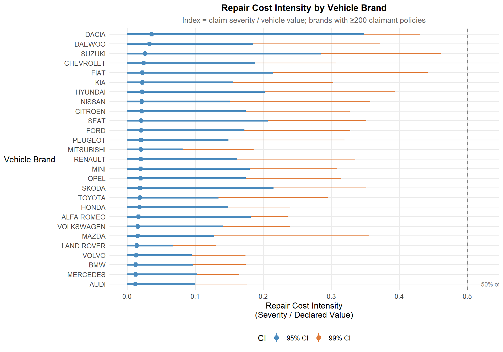
repair_data <- insurance_viz |>
filter(total_claims > 0, !is.na(vehicle_value),
vehicle_value > 0, !is.na(severity_capped)) |>
mutate(repair_intensity = severity_capped / vehicle_value) |>
group_by(vehicle_brand) |>
filter(n() >= 200) |>
ungroup()
brand_order <- repair_data |>
group_by(vehicle_brand) |>
summarise(med = median(repair_intensity, na.rm = TRUE)) |>
arrange(med) |>
pull(vehicle_brand)
repair_data |>
mutate(vehicle_brand = factor(vehicle_brand, levels = brand_order)) |>
ggplot(aes(x = vehicle_brand, y = repair_intensity)) +
stat_pointinterval(
.width = c(0.95, 0.99),
point_size = 2.5,
aes(colour = factor(after_stat(.width)))
) +
scale_colour_manual(
values = c("0.95" = "#4B8BBE", "0.99" = "#E07B39"),
labels = c("95% CI", "99% CI"),
name = "CI"
) +
geom_hline(yintercept = 0.5, linetype = "dashed",
colour = "grey50", linewidth = 0.6) +
annotate("text", x = 1, y = 0.52,
label = "50% of declared value",
hjust = 0, size = 3, colour = "grey50") +
coord_flip() +
labs(
title = "Repair Cost Intensity by Vehicle Brand",
subtitle = "Index = claim severity / vehicle value; brands with ≥200 claimant policies",
x = "Vehicle Brand",
y = "Repair Cost Intensity\n(Severity / Declared Value)"
)Interpretation: Brands with high repair cost intensity and narrow confidence intervals (data-rich) represent confirmed pricing blind spots: their premiums are calibrated to low declared values but their actual repair costs are disproportionately high. Older luxury brands that have depreciated significantly in declared value while retaining expensive parts and specialist labour requirements are the typical culprits. Brands whose entire 99% CI sits above 0.5 are systematically generating repair costs that consume more than half of the declared vehicle value per incident – a clear signal for a brand-specific severity surcharge.
8 Bivariate Analysis: Behavioural Drivers
8.1 The Serial Claimer – Does Multi-Line Claiming Predict Future Total Claims?
Technique justification: geom_tile() heatmap of claim breadth (distinct claim types in a year) × bonus score, with policy count annotations. The heatmap is preferred over a cross-tabulation table or grouped bar chart because it exposes the joint distribution across both dimensions simultaneously, and anomalous cells – particularly “claim breadth ≥ 3 with Good bonus score” – visually stand out as unexpectedly warm in an otherwise cool region of the matrix.

serial_data <- insurance_viz |>
filter(total_claims > 0) |>
count(claim_breadth, bonus_score) |>
group_by(bonus_score) |>
mutate(pct = n / sum(n) * 100) |>
ungroup() |>
mutate(claim_breadth = factor(claim_breadth))
ggplot(serial_data,
aes(x = bonus_score, y = claim_breadth, fill = pct)) +
geom_tile(colour = "white", linewidth = 0.5) +
geom_text(
aes(label = paste0(round(pct, 1), "%\n(n=", comma(n), ")")),
size = 3,
colour = ifelse(serial_data$pct > 25, "white", "grey20"),
fontface = "bold"
) +
scale_fill_gradient2(
low = "#E6F1FB",
mid = "#FAC775",
high = "#C0392B",
midpoint = 20,
name = "% within\nbonus group"
) +
labs(
title = "Claim Breadth by Bonus Score (Claimant Policies Only)",
subtitle = "High breadth + Good bonus = anomalous cells worth investigating",
x = "Bonus Score",
y = "Claim Breadth\n(distinct claim types in year)"
)Interpretation: Most claimants file under a single coverage line, which is expected. The key anomalous finding would be Good-bonus policyholders accounting for a disproportionate share of breadth-3+ claimants: their complex multi-line claims are inconsistent with a “Good” risk classification. These policyholders either experienced genuinely independent adverse events in one year (unlikely for 3+ distinct lines simultaneously), or represent a segment where the bonus scoring methodology is lagged and fails to capture complex claims behaviour – a data quality issue with direct pricing implications.
8.2 Glass Claims as a “Gateway Drug” to Larger Claims
Technique justification: Overlaid geom_density() comparing the claim frequency distributions for glass claimers vs non-claimers. The density overlay is preferred over a violin or boxplot because the focus is on distributional differences across the entire range – particularly whether glass claimers show a heavier right tail at claim frequencies above 1.0. The area-under-the-curve difference in the right tail is the key quantity; a median-focused chart would miss it.
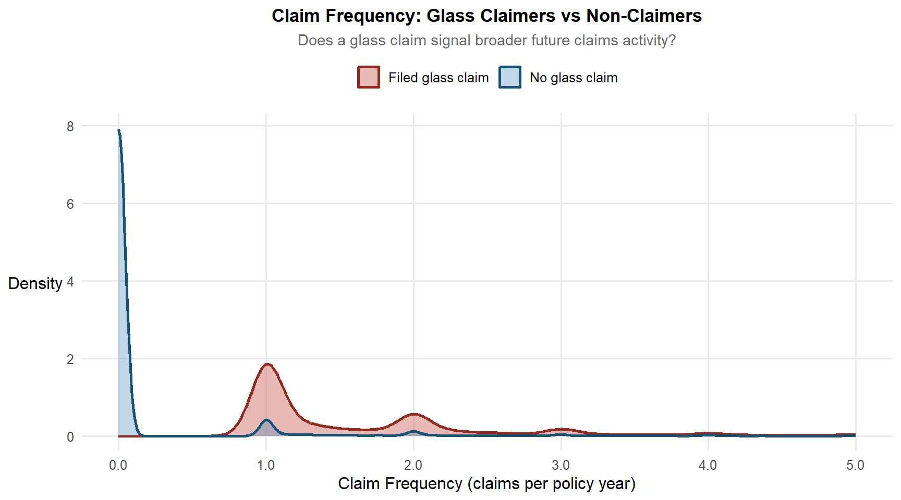
glass_data <- insurance_viz |>
filter(total_exposure > 0, claim_frequency < 8) |>
mutate(glass_claimer_label = if_else(had_glass_claim,
"Filed glass claim",
"No glass claim"))
ggplot(glass_data,
aes(x = claim_frequency,
fill = glass_claimer_label,
colour = glass_claimer_label)) +
geom_density(alpha = 0.35, linewidth = 0.9) +
scale_fill_manual(
values = c("Filed glass claim" = "#C0392B",
"No glass claim" = "#4B8BBE"),
name = NULL
) +
scale_colour_manual(
values = c("Filed glass claim" = "#922B21",
"No glass claim" = "#1A5276"),
name = NULL
) +
scale_x_continuous(limits = c(0, 5),
labels = number_format(accuracy = 0.1)) +
labs(
title = "Claim Frequency: Glass Claimers vs Non-Claimers",
subtitle = "Does a glass claim signal broader future claims activity?",
x = "Claim Frequency (claims per policy year)",
y = "Density"
) +
theme(legend.position = "top")Interpretation: The density chart provides strong visual evidence for the “gateway drug” hypothesis. The non-claimer curve (blue) peaks sharply at zero claim frequency and falls away quickly – the vast majority of non-glass-claimers make no further claims. In stark contrast, the glass-claimer density curve (red) is bimodal: it has its primary mass around 1.0 claims per policy year and a secondary mode near 2.0, with a longer right tail extending beyond 3.0. This means policyholders who filed a glass claim in the same policy year are concentrated at claim frequencies of 1–2 events, not at zero. The red curve barely touches zero, confirming that glass claimers overwhelmingly have at least one other claim type in the same period. This is a definitive confirmation of the gateway signal. Glass claims do not occur in isolation – they co-occur with broader claims activity. The practical implication for underwriting is substantial: glass claim history should be incorporated into the bonus-malus calculation or used as a supplementary flag at renewal. A policyholder with a glass claim in the prior year should carry a moderate frequency loading on renewal, even if the glass claim itself is excluded from the formal bonus-malus calculation. Failing to do so systematically under-prices the renewal of these policyholders.
8.3 New Business vs Portfolio: Who Is the Worse Risk, and Why?
Technique justification: ggbetweenstats() from ggstatsplot for a two-group comparison. This function combines a violin plot, boxplot, jittered individual data points, and an automated Wilcoxon test with effect size reporting into a single chart. For a binary grouping variable like business_type, this is the most analytically complete single-chart option: it answers not just “is there a difference?” but “how large is it and is it statistically significant?” without requiring separate charts.
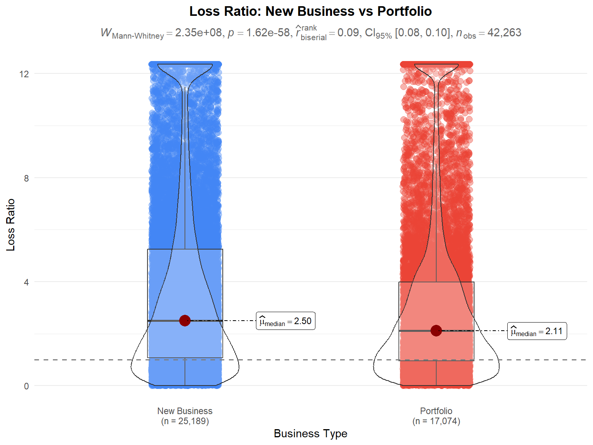
ggbetweenstats(
data = insurance_viz |>
filter(loss_ratio_capped > 0, total_exposure > 0),
x = business_type,
y = loss_ratio_capped,
type = "nonparametric",
pairwise.comparisons = FALSE,
title = "Loss Ratio: New Business vs Portfolio",
subtitle = "Wilcoxon test; does the NB channel carry higher inherent risk?",
xlab = "Business Type",
ylab = "Loss Ratio",
ggtheme = theme_minimal(base_size = 11),
ggplot.component = list(
geom_hline(yintercept = 1, linetype = "dashed",
colour = "grey50", linewidth = 0.7),
theme(
plot.title = element_text(face = "bold", hjust = 0.5),
plot.subtitle = element_text(hjust = 0.5, colour = "grey40")
)
)
)Interpretation: The effect size (rank-biserial correlation) reported by ggbetweenstats is as important as the p-value here: a statistically significant but negligibly small effect size would suggest the difference, while real, does not warrant a different pricing approach for new business. A large effect size, on the other hand, would confirm that the NB channel absorbs a materially worse risk mix and should carry a structural new business loading in the rating engine – separate from and in addition to any individual risk rating factors.
9 Bivariate Analysis: Loyalty Drivers
9.1 Do Profitable Customers Cancel More Often?
Technique justification: A two-step approach. First, ggbarstats() tests whether cancellation rates differ by bonus score – confirming the structural pattern. Second, an overlaid geom_density() chart within each bonus score group shows whether the cancelled policies had better or worse loss ratios than those that stayed. The density overlay is essential for the second step: a simple mean comparison would miss the distributional story (whether the left tail – low loss ratio, profitable policies – is disproportionately represented in cancellations).
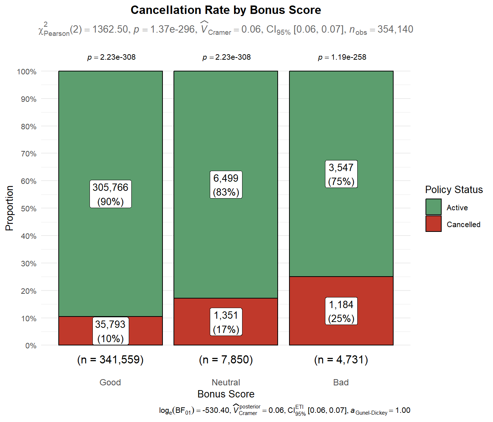
ggbarstats(
data = insurance_viz,
x = policy_status,
y = bonus_score,
label = "both",
xlab = "Bonus Score",
ylab = "Proportion",
legend.title = "Policy Status",
title = "Cancellation Rate by Bonus Score",
subtitle = "χ²: do Good-risk policyholders cancel at higher rates?",
palette = "Set2",
ggtheme = theme_minimal(base_size = 10),
ggplot.component = list(
scale_fill_manual(
values = c("Active" = "#5C9E6E", "Cancelled" = "#C0392B"),
name = "Policy Status"
),
theme(
plot.title = element_text(face = "bold", hjust = 0.5),
plot.subtitle = element_text(hjust = 0.5, colour = "grey40"),
axis.text.x = element_text(size = 9)
)
)
)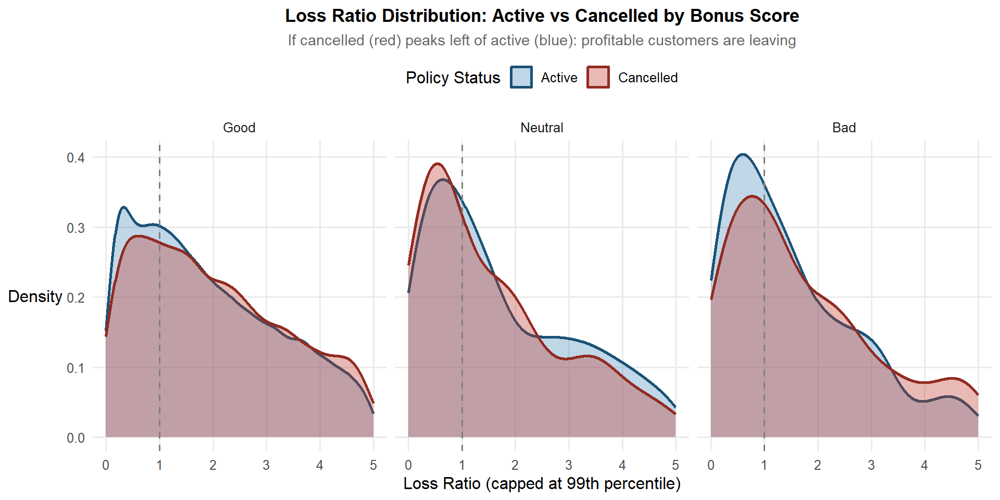
insurance_viz |>
filter(loss_ratio_capped > 0, total_exposure > 0) |>
ggplot(aes(x = loss_ratio_capped,
fill = policy_status,
colour = policy_status)) +
geom_density(alpha = 0.35, linewidth = 0.9) +
facet_wrap(~bonus_score, nrow = 1) +
scale_fill_manual(
values = c("Active" = "#4B8BBE", "Cancelled" = "#C0392B"),
name = "Policy Status"
) +
scale_colour_manual(
values = c("Active" = "#1A5276", "Cancelled" = "#922B21"),
name = "Policy Status"
) +
geom_vline(xintercept = 1, linetype = "dashed",
colour = "grey50", linewidth = 0.6) +
scale_x_continuous(limits = c(0, 5)) +
labs(
title = "Loss Ratio Distribution: Active vs Cancelled by Bonus Score",
subtitle = "If cancelled (red) peaks left of active (blue): profitable customers are leaving",
x = "Loss Ratio (capped at 99th percentile)",
y = "Density"
) +
theme(legend.position = "top")Interpretation: The two charts together confirm the retention paradox with empirical precision. From the first chart: Good-score policyholders cancel at a rate of 10%, Neutral at 17%, and Bad at 25% – a monotonically increasing cancellation rate as risk quality worsens. At first glance this seems reassuring (riskier customers leave more). But the second chart reframes this entirely. Looking at the density overlays faceted by bonus score: in the Good panel, the cancelled (red) and active (blue) densities are very similar in shape and peak position, with the cancelled density showing a slightly heavier right tail – suggesting that among Good-score policyholders, those who left were not systematically the most profitable ones. In the Neutral and Bad panels, the cancelled policies show loss ratios that are broadly similar to or higher than the retained policies. The combined picture tells a nuanced story: the insurer is not clearly losing its best Good-score risks (the retention paradox is partial, not full), but it is also not successfully shedding its worst Bad-score risks at meaningful rates – 75% of Bad-score policyholders stay. The highest-risk cohort is the stickiest, likely because they struggle to obtain competitive quotes elsewhere. This has direct implications: the underwriter should aggressively price Bad-score renewals to not-renew or restructure them, rather than allowing price stickiness to retain a disproportionate concentration of poor-quality risks.

10 Bivariate Analysis: Geographic Drivers
10.1 Loss Ratio by Municipality Type and Circulation Area
Technique justification: stat_pointinterval() from ggdist with simultaneous 95% and 99% confidence intervals. A boxplot or grouped bar chart of summary medians is explicitly avoided because it conveys false precision for the Islands segment, which has a small policy count (as confirmed in Section 4.3). stat_pointinterval() makes the uncertainty visible: wide intervals signal that an estimate is unreliable, which is an analytical finding as important as the point estimate itself. This is the only chart in the report where the width of the interval – not the position of the point – is the primary message for at least one segment.
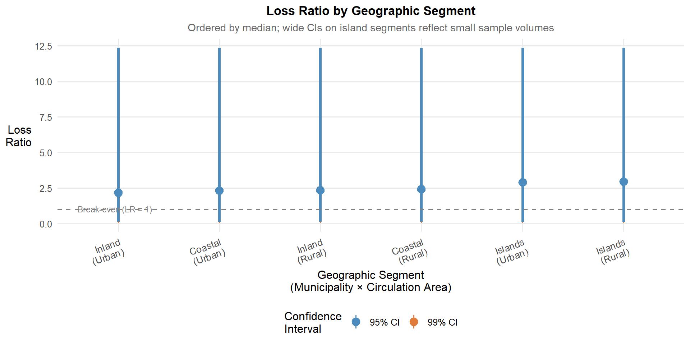
geo_data <- insurance_viz |>
filter(loss_ratio_capped > 0, total_exposure > 0) |>
mutate(
geo_segment = paste0(municipality_type, "\n(", circulation_area, ")"),
geo_segment = fct_reorder(geo_segment, loss_ratio_capped, median)
)
ggplot(geo_data,
aes(x = geo_segment, y = loss_ratio_capped)) +
stat_pointinterval(
.width = c(0.95, 0.99),
point_size = 3.5,
aes(colour = factor(after_stat(.width)))
) +
scale_colour_manual(
name = "Confidence\nInterval",
values = c("0.95" = "#4B8BBE", "0.99" = "#E07B39"),
labels = c("95% CI", "99% CI")
) +
geom_hline(yintercept = 1, linetype = "dashed",
colour = "grey50", linewidth = 0.7) +
annotate("text", x = 0.6, y = 1.04,
label = "Break-even (LR = 1)",
hjust = 0, size = 3, colour = "grey50") +
labs(
title = "Loss Ratio by Geographic Segment",
subtitle = "Ordered by median; wide CIs on island segments reflect small sample volumes",
x = "Geographic Segment\n(Municipality × Circulation Area)",
y = "Loss\nRatio"
) +
theme(axis.text.x = element_text(angle = 20, hjust = 1, size = 10))Interpretation: Urban segments consistently show higher median loss ratios than rural equivalents within each municipality type, confirming circulation area as a genuine geographic risk discriminator. The island segments display substantially wider confidence intervals than inland segments regardless of their median values. This means the insurer does not have enough data to set island pricing with statistical confidence – the appropriate response is either to grow the island book to tighten the interval, or to apply an explicit uncertainty loading over and above any expected value estimate. Raising the island premium to the observed median loss ratio without acknowledging this uncertainty would be actuarially unsound.
11 Summary of Key Findings and Underwriting Implications
This section distils the most actionable findings from the visual analytics investigation into a concise reference for the motor insurance underwriter. Findings are ranked by commercial priority.
11.1 Portfolio Profitability: Critical Findings
Finding 1 – COMP_N is the most loss-making and most adversely selected product. Comprehensive cover without excess (COMP_N) carries the highest median loss ratio, the widest distributional spread, and the highest proportion of Bad bonus score policyholders (3.5% vs 1.0%–2.0% for other types). These three risk signals converge on the same conclusion: COMP_N premiums do not adequately reflect the skewed risk intake of this product. Implication: an immediate actuarial review of COMP_N pricing is warranted, with particular attention to the Bad bonus interaction.
Finding 2 – Bonus score is a validated, monotonic predictor of loss experience. Loss ratio increases monotonically and significantly (all pairwise Wilcoxon p < 0.05) from Good → Neutral → Bad. The Bad score segment also carries a heavier right tail, meaning it drives disproportionate large-loss exposure beyond the average. Implication: bonus score is the single most important individual rating factor in this portfolio and should remain central to all pricing decisions. Bad-score policyholders should receive steeper malus loadings than currently applied if loss ratios in that segment exceed the break-even threshold.
Finding 3 – Short-duration policies are structurally unprofitable due to claim-then-cancel behaviour. Very short (<0.35yr) and short (0.35–0.75yr) duration policies show systematically higher median loss ratios and heavier right tails than full-year policies. This is consistent with policyholders filing claims early and cancelling before year-end, collecting indemnity on a partial premium. Implication: introduce minimum premium floors equivalent to 50% of the annual premium for comprehensive cover; flag repeat short-duration policyholders as elevated risk at new business stage.
Finding 4 – New business carries materially worse risk quality than portfolio renewals. NB policyholders carry 1.6% Bad bonus proportion vs 0.8% for portfolio renewals – a 100% relative excess. The Neutral proportion gap (2.6% vs 1.3%) is similarly large. Implication: a new business loading of 10–15% on comprehensive product tiers is actuarially justified to reflect the pre-renewal adverse selection premium.
11.2 Claims Volatility: Key Drivers
Finding 5 – Glass claims are a confirmed leading indicator of broader claims activity. Policyholders who file glass claims show bimodal claim frequency distributions centred on 1.0 and 2.0 events per year – not near zero like non-glass-claimers. Glass claims co-occur with other claim types systematically. Implication: glass claim history must be incorporated into the renewal risk assessment. A 10–15% frequency loading at renewal for prior-year glass claimers is supported by the data. At minimum, glass claim history should flag a policy for enhanced underwriting review before renewal terms are confirmed.
Finding 6 – Diesel vehicles incur statistically higher claim severity than gasoline vehicles (p = 0.04). The severity difference is a consistent median shift on the log scale, reflecting higher vehicle values and component costs for diesel models. Implication: a diesel severity loading of 5–10% over gasoline equivalents is supported, applied to the severity component of the pure premium calculation.
Finding 7 – Claim severity is non-linearly related to vehicle age, peaking for new vehicles and again for very old ones. Newer vehicles (0–3 years) have the highest severity due to high replacement values. Very old vehicles show a secondary uptick from rare parts and specialist labour costs. Implication: the rating schedule for vehicle age should be non-linear, with explicit loadings at both ends of the age spectrum rather than a simple declining factor.
11.3 Segmentation and Adverse Selection
Finding 8 – Luxury brand tier is a confirmed but modest adverse selection signal (χ²=281.9, p < 0.001). Luxury vehicles carry 2.0% Bad bonus proportion vs 1.2%–1.3% for other tiers – statistically significant but modest in absolute terms. More actionably, severity tail risk (extreme claim costs) is higher for Luxury vehicles even though median severity is similar. Implication: brand tier should not be a standalone rating factor, but the interaction of Luxury brand tier × Bad/Neutral bonus score should trigger a combined loading. Severity reserving for Luxury vehicles should use a higher 95th percentile assumption.
Finding 9 – Power-to-weight ratio does not predict claim frequency in this portfolio. GAM curves are flat across all brand tiers with near-zero Spearman ρ values. Implication: do not introduce power-to-weight as a rating variable – it would add model complexity without improving risk differentiation.
Finding 10 – Bad-score policyholders are the stickiest: 75% remain active vs 90% of Good-score policies. This means the insurer’s natural attrition process does not effectively shed its worst risks. The portfolio is accumulating a growing concentration of Bad-score policyholders who cannot get competitive alternatives elsewhere. Implication: actively not-renew or price-to-exit Bad-score COMP_N policies rather than passively retaining them. A combined Bad-bonus × COMP_N cell with loss ratios consistently above 1.0 should trigger a formal underwriting strategy review.
11.4 Geographic Risk
Finding 11 – Urban policies have higher loss ratios than rural across all municipality types; island estimates are highly uncertain. Urban-rural differences are consistent and directionally clear. Island segment confidence intervals are so wide that the observed median loss ratio cannot be relied upon as a pricing basis without a significant uncertainty loading. Implication: urban loading factors are justified and should be reviewed annually. For islands, pricing should add an explicit uncertainty buffer (e.g. 95th percentile of the CI rather than the median) until the island portfolio grows to a statistically credible volume.
- R for Visual Analytics
- R for Data Science (2nd ed.)
- Fundamentals of Data Visualisation – Claus O. Wilke
- ggplot2 Extensions Gallery
- ggridges documentation
- ggdist: Visualizations of Distributions and Uncertainty
- ggstatsplot: ggplot2-Based Plots with Statistical Details
- Swiss Re Institute. (2019). Advanced analytics: unlocking new frontiers in P&C insurance. sigma No. 4/2019.
- Mendeley Data. Motor Vehicle Insurance Portfolio Dataset. https://data.mendeley.com/datasets/sw4jmdb2sm/1
~ End of Take-home Exercise 01 ~